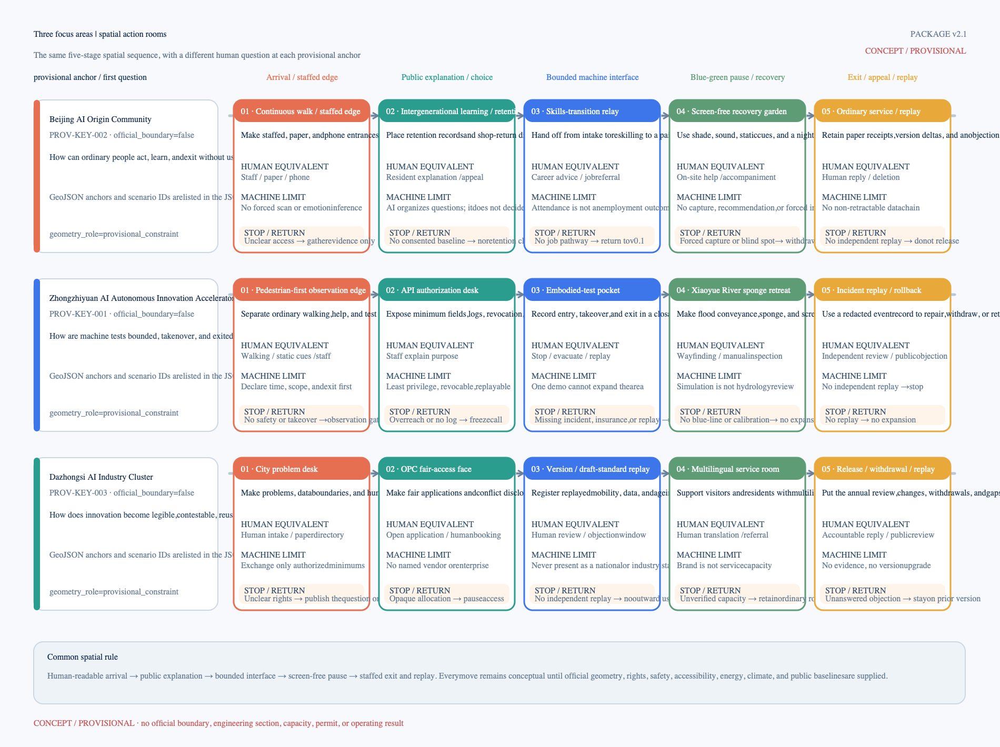

Jingzhang Human City OS: From AI Showcase to a City for People in the AI Era
Release the human minimum before calling the machine: one public spine, six spatial units, three focus areas, and four progression gates make ordinary access, staffed service, screen-free recovery, and replayable exit prerequisites for any AI scenario. Provisional geometry, recomputable design quantities, and unknown outcomes remain visibly separate.
Jingzhang Human City OS
Release the human minimum before calling the machine. Ordinary access, staffed service, screen-free pause, and an appeal-and-exit path cannot be patches added after AI deployment.
Design Basis and Source List | The city needs a human foundation before a machine can enter
The Jingzhang AI Innovation Belt does not lack technology scenarios. What is scarce is a spatial order that can answer: who may enter, who may refuse, and who takes over when a system fails. This proposal treats the city as an operating system that can keep evolving. Human dignity is the foundation; AI is a bounded plug-in; energy, climate, safety, and governance are hard constraints that no plug-in may bypass. Source Depth
The spatial structure is one public spine, six spatial units, three focus areas, and four bounded corridors. The operating sequence is G0 package replay, G1 staffed walk-through, G2 bounded pilot, and G3 independent review. Every AI scenario must first show that an ordinary person can complete the basic task without a model, an account, or a smart device. Minimum-permission machine access comes later. If a scenario cannot be explained, taken over by a person, exited, and replayed, it remains behind the previous gate. Spatial data Spatial data
The three focus areas do different work. Zhongzhiyuan confines machines to stoppable and replayable testing. Beijing AI Origin first validates community retention, work transition, and staffed service. Dazhongsi turns innovation into public products that ordinary people can understand, question, and leave. They are not three showrooms; together they form a north–south sequence from bounded test to social negotiation and everyday acceptance. Depth Depth

The overall extent and the three focus areas use repository-provided provisional geometry and remain official_boundary=false. The drawings support conceptual relationships, topology checks, and package-local EPSG:4548 calculations. They are not official redlines, ownership boundaries, statutory controls, or engineering locations. When formal inputs arrive, all nine GeoJSON layers, metrics, figures, HTML, and PDFs must be recomputed together. Source Spatial data Depth
Three-Level Scope Framework | Carry responsibility from strategy into space
| Working scale | Question | Deliverable | Condition for advancing |
|---|---|---|---|
| Coordinated research area | How do industry, talent, public problems, and regional capability exchange value? | Three-area/two-wing interfaces, five project families, shareable methods, and failure records | A real problem, a source boundary, and a prospective recipient to confirm |
| Overall design area | How do a public foundation and machine plug-ins occupy the same city? | One public spine, six units, four bounded corridors, and blue-green buffers | The ordinary path stays continuous and machine interfaces do not displace staffed or public space |
| Three focus areas | How does a scenario enter, stop, and leave replay evidence? | Three first-release paths, 17 scenario cards, and four gates | G0 is replayable; G1 and beyond require field, authorization, and independent evidence |
The taskbook's three positions divide work along the same chain. The Centennial Jingzhang Cultural Belt protects railway, time, and public memory. The Metropolitan AI Life Experience Belt lets people compare a human baseline with an AI increment. The AI Integrated Innovation Belt accommodates R&D, bounded testing, and reusable protocols. The five functions return to testing, ecosystem, scenarios, public service, and governance instead of remaining slogans. Source Source

Land Use, Building Scale, and Retain-Renovate-Demolish Strategy | Six spatial units retain everyday capacity first
Six shared-edge conceptual units cover the provisional extent. LU-H01 supports resident retention and community-service repair; LU-D01 holds international services and small-team ecology; LU-C01 supports work transition and public-data learning; LU-B01 preserves reversible capacity; LU-B02 contains city-API and embodied-intelligence R&D; LU-C02 protects screen-free green space and climate resilience. Spatial data Depth
| Spatial unit | Package-derived share | Urban capacity retained first | Machine boundary |
|---|---|---|---|
| LU-H01 Community retention and service repair | 18.28% | Retention support, staffed counter, community deliberation | Do not treat a spatial proxy as a resident-retention outcome |
| LU-D01 International service and small-team ecology | 17.68% | Multilingual staffed service and fair OPC application | Do not invent institutions, firms, or signed partnerships |
| LU-C01 Work transition and public-data learning | 17.06% | Paid transition, paper consultation, public explanation | Training counts cannot replace sustained employment outcomes |
| LU-B01 Reversible reserve and temporary use | 15.09% | Temporary activity, exit space, ordinary pause | Do not lock in permanent programs or irreversible construction |
| LU-B02 City API and embodied-intelligence R&D | 15.48% | Minimum-permission catalogue and bounded interface | Do not connect unauthorized personal or municipal data |
| LU-C02 Screen-free green and climate resilience | 16.40% | Shade, quiet, stormwater, and staffed inspection | Simulation cannot replace hydrology, heat, or field calibration |

The six units are not a statutory land-use proposal. They expose a choice: retain community-support and reversible urban capacity before allowing machine-oriented R&D into removable interfaces. FAR, building height, ownership, demolition quantities, and formal roads remain unknown. Metric Metric Depth
Transport, Rail, Municipal Infrastructure, and Public Services | Four bounded corridors
The four conceptual corridors are not engineering alignments. They draw operating rules into space. The 5.919 km work-transition corridor starts with continuous walking and staffed career advice. The 4.586 km silicon-right-of-way test corridor permits only declared time windows, minimum permissions, and human takeover. The 2.015 km low-altitude concept corridor must preserve the ordinary ground route. The 8.366 km sponge-resilience inspection line begins with static refuge, staffed inspection, and missing hydrological evidence. Metric Metric Metric

Every crossing follows four common rules: visible state, low-speed pause, human takeover, and incident replay. If road, airspace, safety, insurance, or blue-line evidence is missing, the corresponding machine scenario cannot move from concept to pilot. The night-assurance spine retains ordinary transport alternatives and does not require continuous location, face recognition, or personal risk scoring. Depth Depth
Detailed Design of Key Areas | First accept one journey an ordinary person can finish
The three focus areas form one verification network for the operating system. Zhongzhiyuan tests whether a machine can remain bounded; Beijing AI Origin tests whether public service retains a human floor; Dazhongsi tests whether ordinary people can understand knowledge and products. One five-stage path and four progression gates create a comparable spatial mechanism.
| Provisional focus area | Priority users | Five-stage first-release path | Minimum G1 evidence | Stop and return |
|---|---|---|---|---|
| Zhongzhiyuan | Pedestrians, test observers, field-service staff | Ordinary walk—staffed authorization—bounded test—sponge retreat—incident replay | Road and accessibility walk-through, safety, insurance, responsibility, human takeover | If any item is missing, remain on paper and offline; do not open testing |
| Beijing AI Origin | Residents, older people, low-digital users, transitioning workers | Ordinary arrival—staffed/phone/paper—learning and transition—screen-free recovery—appeal and exit | Service catalogue, human equivalence, resident/work baseline, informed consent | Without a credible baseline, retain ordinary service and publish no retention or employment outcome |
| Dazhongsi | Small teams, first-time and international visitors, public-service staff | Problem registration—fair application—version replay—multilingual staff—exit and withdrawal | Rights and IP, minimum authorization, multilingual accuracy, complaint and independent review | If rights, language, or case boundaries are unclear, close the display and retain staffed service |


Package G0 uses four synthetic public-service contracts to check fields and rejection logic. All 4/4 positive fixtures replay, 8/8 negative fixtures missing consent, a staffed entrance, minimum data, scope, appeal, low-impact boundaries, bilingual review, or a spatial anchor are rejected, and 4/4 bilingual field sets agree. This proves only that the contract structure is replayable. No real users, field staffing, personal data, or external systems were involved; G1 remains HOLD. Spatial data

AI Innovation Ecosystem, Personas, and AI+ Scenarios | Nine groups hold distinct veto points
Six base personas cover residents and older people, transitioning workers, night-shift AI workers, small teams and OPCs, public-service staff, and people with mobility or low-digital barriers. Three extensions cover young entrants, developers and researchers, and first-time or international visitors. Each group is tied to an ordinary entrance, spatial node, human alternative, minimum data, and stop condition. Representative paths do not substitute for demographic research or real participation. Spatial data Spatial data

The 17 scenario cards are not an event list. Each asks five questions: who benefits, where it lands, what AI alone may do, who can take over, and what must stop it. The staffed entrance in SC-A03, the silicon-right-of-way test in SC-B02, the incident review in SC-C03, and multilingual service in SC-D03 represent the human foundation, machine boundary, hard constraint, and outward value. Spatial data Spatial data

Overall Design Area: Urban Renewal and Regulatory-Plan-Level Urban Design | Use AI to expose trade-offs
The parametric study generates 128 candidates over the same provisional site area, compares four proxy lenses—community retention, reversible reserve, machine callability, and climate buffer—and identifies a non-dominated set. It allows a reviewer to see how shares change derived areas without presenting proxy values as resident outcomes, AI capability, or a recommended plan. Spatial data Depth
Three readable candidates then compress the difference onto one board. Relative to the baseline, people_first raises community-support and reversible-reserve shares and lowers the city-API/embodied-R&D share; machine_ready moves in the opposite direction. Without formal boundaries, statutory controls, and public baselines, the candidates remain conceptual comparisons and do not overwrite formal geometry or metrics. Spatial data Spatial data

The city API follows six steps: catalogue, authorize, call, log, audit, and exit. A machine operates only for a named purpose, minimum fields, and revocable permission. Paper, phone, staffed explanation, and appeal remain parallel. The sequence is replayable offline, but this does not mean an interface has been deployed or authorized. Spatial data Depth
Blue-Green Network, Public Space, and Urban Character | Return culture, learning, and version governance to daily life
Three concept landmarks hold different public actions. The Human Version Hall publishes issues, changes, and withdrawals. The Rail Interface Clock turns Jingzhang railway time into a legible renewal rhythm. The Screen-Free Recovery Beacon places shade, sound, night safety, and non-compulsory interaction beside technology experiences. They are not corporate showrooms or construction commitments. Source Depth

The annual rhythm organizes questions and evidence only: register public problems in spring, review bounded interfaces and embodied tests in summer, inspect work transition and OPC co-creation in autumn, and publish version differences and exit records in winter. Without a site, operator, budget, permit, and public process, none of this becomes an operating calendar. Spatial data
Regional collaboration exchanges methods, not unauthorized data or conclusions. The Zhongguancun technology-service wing receives legal, standards, compute, and translation questions. The Xiaoyue River scenario wing receives low-risk public problems and ecological feedback. Toward Beiwei Community, Future Science City, Huairou Science City, the Economic-Technological Development Area, and Jing-Jin-Ji, the package offers only de-located schemas, failure packages, and version differences; it does not invent partners. Spatial data

The identity system uses rail, interface, and human-confirmation marks. Color distinguishes the human foundation, machine interface, hard constraint, and exit/replay. It supports wayfinding, service cards, and version records; it is not an official mark or government endorsement. Spatial data

Renewal Projects, Implementation Policy, and Phasing | Four vetoable progression gates
| Gate | Permitted work | Evidence required first | Failure action |
|---|---|---|---|
| G0 Package replay | Check fields, references, bilingual parity, and stop logic | Resolvable spatial anchors, a human path, positive and negative fixtures | Missing fields or references return to revision |
| G1 Staffed walk-through | Verify real access, service, accessibility, and explanation | Named responsibility, authorized place, service catalogue, consent process | If the path fails or staffed access is unavailable, stop |
| G2 Bounded pilot | Run a small, reversible, stoppable scenario | Safety, insurance, minimum data, energy-climate, and incident protocol | Freeze on overreach, irreversibility, or uncontrolled risk |
| G3 Independent review | Decide to retain, modify, exit, or expand narrowly | Field results, public objections, independent evaluation, version difference | Do not release without a responsibility reply and exit record |

Five project families cover the human buffer; city API and reversible components; human–machine, climate, and compute-energy work; data authorization and version governance; and ecological/regional outward transfer. Operators, budgets, and schedules remain unconfirmed. The proposal provides responsibility slots for evidence without presenting suggested roles as appointed parties. Spatial data Depth
Evidence gaps enter the gates as well. Formal boundaries, ownership, roads/airspace, existing buildings, energy and heat, hydrology, resident and work baselines, and service authorization each bind to affected layers, metrics, and return actions. A material input change triggers a coordinated recomputation of geometry, metrics, figures, and release decisions. Spatial data

Metrics, Area Recalculation, and Compliance Matrix | Recomputable design quantities and unknown outcomes
| Recomputable design quantity | Current value | Evidence boundary |
|---|---|---|
| Provisional site area | 11.41 km² | Package geometry in EPSG:4548; low confidence |
| Community-retention support unit | 18.28% | Design land share, not resident-retention performance |
| Reversible reserve | 15.09% | Conceptual spatial capacity, not approved land use |
| Green-space design layer | 11.12% | Package design geometry, not existing or statutory green rate |
| Public-space design layer | 1.06% | Package design geometry, not proof of public-access performance |
| Scenario nodes | 16 geometry nodes, 17 scenario cards | SC-D04 reuses an existing anchor |
Resident retention, sustained employment transition, human-service equivalence, PUE, green-electricity share, and recovered heat remain unknown/null. Each item has minimum evidence requirements. Spatial shares, training counts, webpage accessibility, or policy-reference targets cannot fill real-world outcomes. Metric Metric Metric

Coordinated Research Area: Industry and Future City Research | Make methods and failure records reusable
The coordinated research area does not invent companies, partners, or events to complete an industry narrative. It frames university origination, small-team translation, technology services, public problems, and regional cooperation as interfaces that still need recipients, and it releases only de-located schemas, failure packages, and version differences. The seven repository review questions and the taskbook requirements return to short evidence paths. Brief alignment uses the three scales and three-area/two-wing structure. Originality uses the human-foundation, machine-plug-in, four-gate consistency. AI planning innovation uses parametric trade-offs and the bounded city API. Feasibility uses project families, responsibility slots, and stop actions. Public interest uses nine personas and human equivalence. Risk and compliance use evidence gates and unknowns. Expression completeness uses bilingual core figures, PDFs, and offline HTML. Spatial data


The figures, A3/A0 sets, HTML, and structured evidence share one manifest hash chain. An offline PASS proves only file, reference, bilingual-mapping, and constraint consistency. It is not an official score, award, publication, permit, or implementation result. Spatial data Depth
Risk, Copyright, and Compliance | Rights and evidence still required
The proposal uses only registered public sources and the package's provisional geometry; it does not process personal data or materials not released for public use. Public sources are registered by use, date, rights, and limitation in sources.json; authorship and reuse boundaries for figures, scripts, and structured files are recorded in the copyright statement and rights ledger. External cases transfer mechanisms only, not foreign performance, institutions, or statutory standards. Source Spatial data
Six gap groups remain decisive: official boundaries and statutory controls; existing buildings and ownership; transport, airspace, safety, and insurance; energy, heat, and hydrology; resident, merchant, and employment baselines; and named operation with public authorization. Organizers, professional teams, and future authorized parties must supply them according to responsibility. Until then, scenarios remain not_authorized_not_run and outcomes remain null. Depth
The minimum promise is simple: through any technology cycle, an ordinary person can still arrive, understand, refuse, pause, and leave; before any expansion, responsibility, evidence, and rollback must be visible.
References
The open-call announcement, agent taskbook, site package, source registry, Beijing and Haidian public materials, and the Barcelona, Busan, Kalasatama, Punggol, Quayside, and Seoul cases are registered in sources.json. Full URLs, access dates, scope, and rights notes remain authoritative there. Neither the text nor the drawings use a precedent as a substitute for Jingzhang field evidence. Source Source Source
The use sequence is explicit. The announcement and taskbook define the questions; the site package limits provisional spatial inputs; public policy and precedents support mechanism comparison only; package GeoJSON and metrics carry recomputation. A source that supports a concept or method is not promoted into field fact. Missing official boundaries, ownership, building, municipal, demographic, or operating evidence keeps the affected claim provisional, unknown, or HOLD. New evidence must first register purpose and rights, then trigger coordinated recomputation of affected geometry, metrics, figures, HTML, PDFs, and release gates; it cannot be absorbed by changing one sentence or image.